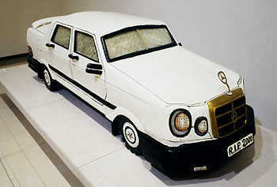

|
The
Modern Collections The British Museum collects material from the early twentieth century to the present day, in keeping with its commitment to represent a comprehensive history of cultural development. The range of activity crosses six different departments covering every part of the world and artefacts of every conceivable type and medium. There is a particular value to setting modern and contemporary material within the context of a museum whose holdings extend from the earliest evidence of human settlement across all continents. The dialogue between the Museum's collections and contemporary artists and designers has always been an imaginative resource of huge importance: Jacob Epstein, Henry Moore, David Smith and Dhruva Mistry are but four examples of artists on whom the collections have had a decisive impact. In David Smith's case, the British Museum's display of First World War medals which he saw in 1936, inspired his own series, Medals for Dishonor of 1939-1940. Left: Coffins of this kind are a relatively new tradition dating from the 1950's and using carpentry techniques originally introduced by Western missions. An attempt is made to link the design of the coffin with the achievements or aspirations of the deceased. Thus a mother may be buried in a large hen with chicks around her feet, a sociable man may be buried in a giant beer bottle or a rich trader buried, as here, in a Mercedes saloon. This particular coffin was made at Paa Willie's Six Foot Enterprise, Teshie, Ghana in 2000 (see numberplate). The long history and diversity of the Museum's collections since 1753, precludes a single, unitary policy of acquisition applicable to all fields which, according to their departmental specialities are: Coins and Medals (including paper money and badges), Ethnography, Oriental and Japanese Antiquities, Modern Europe and America as part of the Department of Medieval and Modern Europe which deals with the applied arts, and Prints and Drawings which covers Europe and all parts of the world culturally associated with it. Some of these collections aim at comprehensiveness e.g. coins; others are more selective. Some, such as Ethnography, form field collections which provide a very full cultural context, while others focus only on particular aspects of material culture. In all cases acquisitions are made with a view to providing material for reference and research as well as temporary exhibitions and permanent galleries within the building, touring exhibitions and loans elsewhere, and online access through the Museum's website. The reserve collections are at the heart of what the Museum does with each department operating its own facilities where people may come for both individual and group study. The temporary
exhibition programme is one way of drawing public attention to our
modern material but this also has a presence within the permanent
galleries. Room 48 is devoted to changing displays of glass, ceramics
and metalwork, the areas in which the Museum has concentrated its
collecting of modern European and American design; the HSBC Money
Gallery (Room 68), has a display on 'Money in the Modern Society'
and the North American gallery (Room 26) also includes work from
the twentieth century and beyond. The galleries covering Korea (Room
67) and Africa (Room 25), present contemporary culture at the point
of entry, as well as containing many other examples of recent date
in the latter case. An online tour called Collecting
the Modern World is accessible via Further Reading Attwood, P. Acquisitions of Badges (1983-1987). British Museum Occasional Paper 76, 1990 Carey, F. ed. Collecting the 20th Century. British Museum Press, 1991. Carey, F. Modern Scandinavian Prints. British Museum Press, 1997 Carey, F. and Griffiths, A. Avant-Garde British Printmaking 1914-1960. British Museum Press, 1990 Carey, F. and Griffiths A. The Print in Germany 1880-1933. British Museum Press revised edition, 1993 Clark, T. 100 Views of Mount Fuji. British Museum Press, 2001 Coppel, S. Picasso and Printmaking in Paris. South Bank Centre, 1998 Hewitt, V. Beauty and the Banknote. Images of Women in Paper Money. British Museum Press, 1994 King, J.C.H. First peoples, First Contacts. Native Peoples of North America. British Museum Press, 1999 Mack, J. ed. Africa. Arts and Culture. British Museum Press, 2000 Portal, Jane. Korea. Art and Archaeology. British Museum Press, 2000 Rudoe, J. Decorative Arts 1850-1950. A Catalogue of the British Museum Collection. British Museum Press, revised edition, 1994 Smith, L. Modern Japanese Prints 1912-1989. British Museum Press, 1994 Smith, L. Japanese Prints during the Allied Occupation, 1945-1952, British Museum Press, 2002 Syson, L. Size Immaterial: Hand-held Sculpture of the 1990s. British Art Medal Society, 1999 |
world cultures | sitemap | contact us | copyright